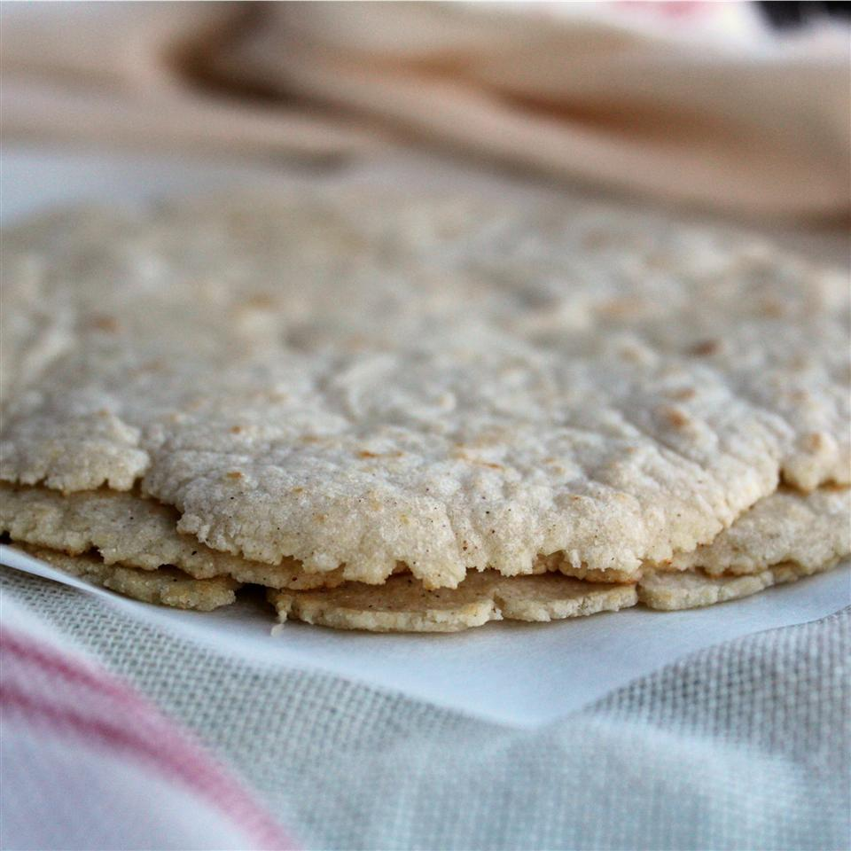

Corn Tortillas

Descripton
This is also a recipe from Mexico. This is a staple of Mexican cuisine.
Ingredients
- 1 3/4 cups of masa harina
- 1 1/8 cups of water
Steps
- In a medium bowl, mix masa harina and hot water until it beocmes dough
- Cover dough with plastic wrap and allow to stand for 30 minutes
- Preheat a cast iron to medium heat
- Divide dough into balls. Press each ball of dough
- Place tortilla in preheated pan until slightly puffy and then turn tortilla
- Remove tortilla after 30 seconds and repeat with the other dough balls